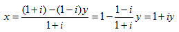
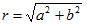
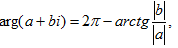

примеры решения задач
Пример 1. Сложить (4 + 9i) + (-4 + i).
Решение. При сложении комплексных чисел их действительные части и коэффициенты при мнимых частях складываются:
(4 + 9i) + (-4 + i) = (-4 - 4) + (9+1)i = 0 + 10i =10i.
Ответ: 10i.
Пример 2. Перемножить (2 + 3i) · (6 - 5i).
Решение. Для того, чтобы переножить два комплексных числа, надо перемножить их как дучлены и затем наменить i2 на -1:
(2 + 3i) · (6 - 5i) = 12 - 10i + 18i - 15i2 = (12 + 15) + (18 - 10)i = 27 + 8i. По правилу умножения пар запишем: (2 + 3i) · (6 - 5i) = (2 · 6 - 3 · (-5)) + (2 · (-5) + 3 · 6)i = 27 + 8i.
Ответ: 27 + 8i.
Пример 3. Разделить (9 - 7i) / (2 - 3i)
Решение. Для вычисления частного умножим делимое и делитель на число, сопряженное делителю:
Ответ: 3 + i.
Пример 4. Возвести в степень (1 - 2i)4.
Решение. Можно воспользоваться формулой бинома Ньютона:
(1 - 2i)4 = 1 - 4 · 2i + 6 · 4i2 - 4 · 8i3 + 16i4 = 1 - 8i - 24 + 32i + 16 = -7 + 24i.
Проще дважды возвести в квадрат: (1 - 2i)4 = (1 - 4i - 4)2 = (-3 - 4i)2 =
9 + 24i - 16 = -7 + 24i.
Ответ: -7 + 24i.
Пример 5. Вычислить в зависимости от k (1 + i)k / (1 - i)k-1 · (1 + i).
Решение. Возпользуемся тем, что i4a + p = ip, где a, p ∉ Z. Тогда
при k = 4c
ik - 1 · (1 + i) = i4c - 1 · (1 + i) = i3 · (1 + i) = -i ·(1 + i) = 1 - i;
при k = 4c + 1
ik - 1 · (1 + i) = i4c · (1 + i) = 1 + i;
при k = 4c + 2
ik - 1 · (1 + i) = i4c + 1 · (1 + i) = i · (1 + i) = -1 + i;
при k = 4c + 3
ik - 1 · (1 + i) = i4c + 2 · (1 + i) = i2 · (1 + i) = -1 - i (c - везде целое число).
Пример 6. Найти действительные решения уравнения
(2 - 3i) · x + (3 + 2i) · y = 2 - 5i.
Решение. Преобразуем левую часть и используем условие равентства комплексных чисел:
(2 - 3i) · x + (3 + 2i) · y = (2·x + 3·y) + (-3·x + 2·y)i. Поэтому система линейных уравнений
равносильна исходному уравнению.
Ответ: x = 19/13; y = -4/13.
Пример 7. Решить систему уравнений
Решение. Вычислим основной и два вспомогательных определителя системы:
т.е. x = 5i / (13 + 6i) = (6 + 13i) / 41;
т.е. y = -i / (13 + 6i) = -i · (13 - 6i) / 205 = (-6 - 13i) / 205.
Ответ: (6/41 + 13i/41, -6/205 - 13i/205).
Пример 8. Найти действительные числа и из уравнения
Решение. Преобразуем данное уравнение следующим образом:
Отсюда получаем систему:

Из второго уравнения следует, что либо y = 0, либо x = 1. Если y = 0, то из первого уравнения либо x = 0, либо x = -1. Но из области определения следует, что x и y одновременно не могут равняться нулю. Значит остается решение x = - 1, y = 0. Если x =1, то из первого уравнения y = 1/2.
Ответ. x = -1, y = 0 или x = 1, y = 1/2.
Пример 9. Решить систему уравнений

Решение. Выразим x из первого уравнения системы

Подставим найденное значение во второе уравнение системы и найдем y:
(1 - i) · (1 + iy) + (1 + i)y = 1 + 3i,
y(1 + i) = 2i,
Тогда
x = 1 + i(1 + i) = 1 + i + i2 = i.
Проверка. Подставляя в исходную систему x = i, y = 1 + i, получим ы=верные равенства:
(1 + i)i + (1 - i) · (1 + i) = i + i2 + 1 - i2 = 1 + i,
(1 - i)i + (1 + i) · (1 + i) = i - i2 + 1 +2i + i2 = 1 + 3i.
Ответ: x = i, y = 1 + i.
Пример 10. Изобразить на плоскости и записать в тригонометрической форме числа:
Решение. Откладывая действительную часть на оси Ох, а мнимую – на оси Оу, получаем 4 точки, образующие прямоугольник ABCE. Таким образом, координатный угол, в котором расположена тачка, зависит от сочетания знаков мнимой и действительной частей комплексного числа.
Все четыре числа имеют равные модули:
Модуль комплексного числа a + bi вычисляется по формуле , т. е. равен длине радиуса – вектора, проведенного из начала координат в точку, изображающую комплексное число. Аргумент комплексного числа изображается углом, отсчитанным от оси Ох против часовой стрелки до радиуса – вектора, изображающего данное число. Поэтому для числа из первого координатного угла , т.е. .
Для чисел, расположенных в остальных координатных углах, аргумент вычисляется с учетом формул приведения и исходя из геометрических соображений.
Для второго координатного угла т.е. . Для четвертого координатного угла  т.е. 
Ответ: 

Пример 11. Изобразить на плоскости и записать в тригонометрической форме числа: 1 + i, -1 + i, -1 - i, 1 - i.
Решение. Для каждого комплексного числа, откладывая действительную часть по оси ОХ, а мнимую по оси ОY, получим четыре точки P1(1 ; 1), P2(-1 ; 1), P3(-1 ; -1), P4(1 ; -1),

Все четыре числа имеют равные модули:  .
.
Модуль комплексного числа a + bi вычисляется по формуле , т.е. равен длине радиус-вектора, проведенного из начала координат в точку, изображающую комплексное число. Аргумент комплексного числа равен величине угла, отсчитанного от оси OX против часовой стрелки до радиус-вектора, изображающего данное число. Для числа 1 + i получаем  . Находим аргументы остальных комплексных чисел:
. Находим аргументы остальных комплексных чисел:

Используя найденные значения модулей и аргументов комплексных чисел, получим
Ответ:

Пример 12. Вычислить 
Решение. Предcтавим число  в тригонометрической форме
в тригонометрической форме

 ,
,  .
.
Из чертежа видим, что 
Тогда  . Таким образом,
. Таким образом,  .
.
По формуле Муавра имеем:
 .
.
Для вычисления корня из комплексного числа используем формулу:

Имеем: 
Полагая k = 0, 1, 2, 3, получаем:

Ответ:

Пример 13. Вычислить  в алгебраической форме.
в алгебраической форме.
Решение. Пусть  , где x, y - действительные числа. Тогда, возводя обе части равенства в квадрат, получим
, где x, y - действительные числа. Тогда, возводя обе части равенства в квадрат, получим
1 - i = x2 - y2 + 2xyi.
Из условия равенства комплексных чисел имеем систему уравнений относительно x и y:

Из второго уравнения выразим y и подставим в первое уравнение:
 (*)
(*)
 или
или  .
.
Решая последнее уравнение, найдем два значения для x:
 ,
,  .
.
Подставляя найденные значения в (*), получим
 ,
,  .
.
Итак, имеем два значения:
 ,
,  .
.
Ответ: , .
Пример 14. Представить в тригонометрической форме:
а) cosφ - isinφ; б) cosφ - isin(-φ); в) -cosφ - isinφ; г) sinφ + icosφ.
Решение. Во всех четырех случаях запись комплексного числа напоминает тригонометрическую форму, но не является ею, т. е. φ не является аргументом ни одного из данных чисел.
В случаях «а», «б» воспользуемся нечетностью синуса и четностью косинуса, т. е. cosφ - isinφ - isinφ = cosφ + isin(-φ) = cos(-φ) + isin(-φ). Если при этом -φ есть отрицательная величина, то к аргументу можно прибавить достаточное число периодов. В случае «в» применим две формулы приведения cos(φ + π) = - cosφ, sin(φ + π) = - sinφ, т.е. -cosφ - isinφ = cos(φ + π) + isin(φ + π). В случае «г» опять используем формулы приведения, т. е.

Ответ:
Пример 15. Построить на плоскости изображение множества решений системы ограничений:

Решение. Точки, изображающие решения неравенства 1 ≤ |z| ≤ 2, лежат между окружностями радиусов 1 и 2 с центром в начале координат, включая сами окружности. Точки, изображающие решения неравенства π/4 < arg < 3π/4, лежат между лучами OA и OB, исключая сами лучи. Пересечение этих двух фигур заштриховано, оно изображает множество решений данной системы неравенств.
Пример 16. Определить, какому условию должны удовлетворять два неравных нулю комплексных числа, чтобы модуль их суммы равнялся модулю их разности.
Решение. Комплексные числа можно понимать как векторы, отложенные от начала координат до точки, изображающей это комплексное число. Тогда складывать и вычитать комплексные числа можно как векторы, т. е. a + b есть вектор, совпавший на чертеже с диагональю параллелограмма, построенного на векторах a и b как на сторонах. Со второй диагональю параллелограмма, не проходящей через начало координат, совпадает направленный отрезок, равный вектору a - b. Чтобы модули чисел a + b и a - b равнялись, необходимо и достаточно, чтобы длины отрезков |a + b| и |a - b| равнялись, т.е. чтобы параллелограмм OACB имел конгруэнтные диагонали, т.е. чтобы OACB был прямоугольником. Это условие равносильно требованию, чтобы разность аргументов чисел a и b равнялась π/2 или 3π/2 (если число b лежит на луче OB1).
Ответ:
Пример 17. Построить множество решений уравнения |z - 2 + i| = 3.
Решение. Так как модуль разности двух комплексных чисел равен расстоянию между точками, изображающими их на плоскости, то представим уравнение в виде |z - (2 - i)| = 3. Теперь видно, что множество решений данного уравнения есть окружность с центром в точке 2 - i и радиусом, равным 3.
Ответ:
Пример 18. Пусть число z задано точкой на комплексной плоскости.
Построить число  .
.
Решение. При умножении модули чисел перемножаются, а аргументы их складываются. При делении модуль делимого делится на модуль делителя, а аргумент делителя вычитается из аргумента делимого. Поэтому переведем множитель  и делитель
и делитель  в тригонометрическую форму. Предварительно построим z = 2 - 3i, сместив заданную точку z на две единицы вправо и на три единицы вниз, т. е. на вектор
в тригонометрическую форму. Предварительно построим z = 2 - 3i, сместив заданную точку z на две единицы вправо и на три единицы вниз, т. е. на вектор  Получим a = z + 2 - 3i. При умножении на
Получим a = z + 2 - 3i. При умножении на  вектор a следует повернуть на угол π/3 и растянуть в два раза. Получим вектор
вектор a следует повернуть на угол π/3 и растянуть в два раза. Получим вектор  При делении на
При делении на  вектор b следует сжать в два раза и повернуть по часовой стрелке на угол 3π/4. Получим вектор p, который и изображает число p.
вектор b следует сжать в два раза и повернуть по часовой стрелке на угол 3π/4. Получим вектор p, который и изображает число p.
Ответ:
Пример 19. Построить множество решений системы ограничений
 (1)
(1)
Решение. Используем тот факт, что аргумент произведения равен сумме, а аргумент частного- разности аргументов. Для второго неравенства применим аналогичное предложение для модулей: модуль произведения равен произведению, а модуль частного- частному модулей. Получим систему:
 (2)
(2)
Вычислив в системе (2) аргументы и модули, получим следующую систему:
 (3)
(3)
В системе (3) ко всем членам первого неравенства прибавим π/2 все члены второго неравенства разделим на 5/2. Получим следующую систему:
 (4)
(4)
В системе (4) решения первого неравенства изображаются сектором, ограниченным лучами 2π/3 и 5π/6 включая сами лучи. Решения второго неравенства заполняют кольцо между окружностями радиусов 2 и 4 с центром в точке -1 - i. Пересечение заштриховано.
Пример 20. Вычислить 
Решение. Пусть  , где x, y - действительные числа. Возведем обе части равенства в квадрат: 8 - 6i = x2 - y2 + 2xy (помним, что i2 = -1).
, где x, y - действительные числа. Возведем обе части равенства в квадрат: 8 - 6i = x2 - y2 + 2xy (помним, что i2 = -1).
Полученное уравнение равносильно системе уравнений
 (2)
(2)
Возведя в квадрат оба уравнения системы (1) и сложив их, выведем следствие системы (2):
x4 + 2x2y2 + y4 = 100, (3)
которое преобразуется к виду (x2 + y2)2 = 100. Поэтому на множестве пар действительных чисел уравнение (3) равносильно уравнению (4):
x2 + y2 = 10 (4)
Если в систему уравнений включить ее следствие, то получится система, равносильная исходной. Включим уравнение (4) в систему (2):

Итак, система (2) имеет два решения: (3;-1) и (-3;1). Они дают два значения корня квадратного.
Ответ: 
Пример 21. Решить уравнение (2 + i) · x2 - (5 - i) · x + (2 - 2i) = 0.
Решение. По формуле корней квадратного уравнения получаем:

Аналогично предыдущей задаче находим  Поэтому
Поэтому

Ответ: {1 - i, 4/5 - 2i/5}.